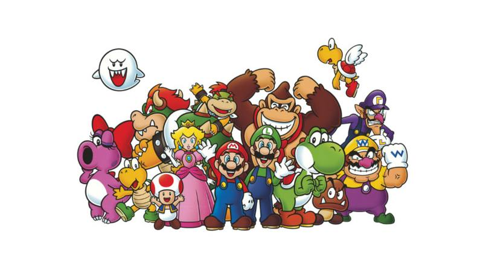

Donkey Kong es el primer juego creado por Shigeru Miyamoto y supuso la creación de dos de los personajes más importantes de Nintendo: Mario y Donkey Kong.
El popular comecocos llegó a las máquinas de arcade en 1980 y es uno de los juegos clásicos más importantes de la historia. Un sencillo juego en el que tan solo hay que ir recogiendo puntos y otros objetos hasta limpiar el nivel y pasar al siguiente.
Super Mario Bros es el primer juego con Mario de protagonista. Desarrollado por Miyamoto y publicado por Nintendo para NES en 1985, se trata de un juego de plataformas que ha trascendido al medio y se ha convertido en todo un icono de la cultura popular.
Los recuerdas? Una década dorada que dio origen a multitud de clásicos
